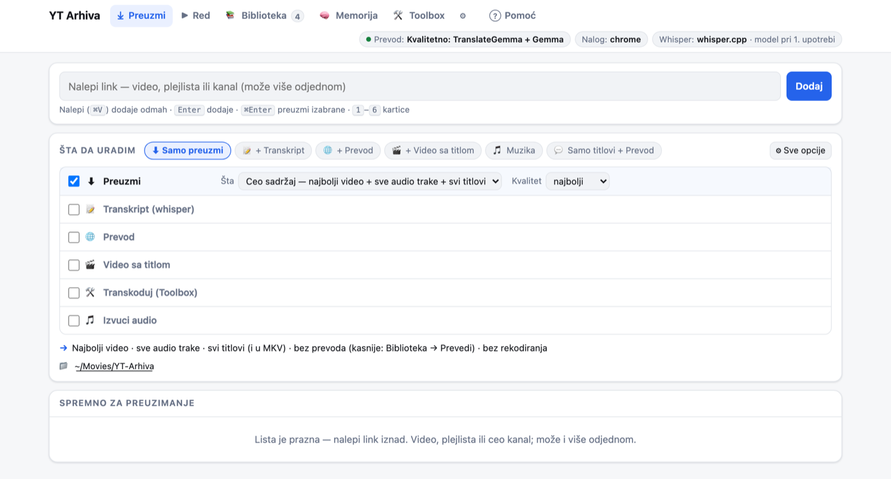
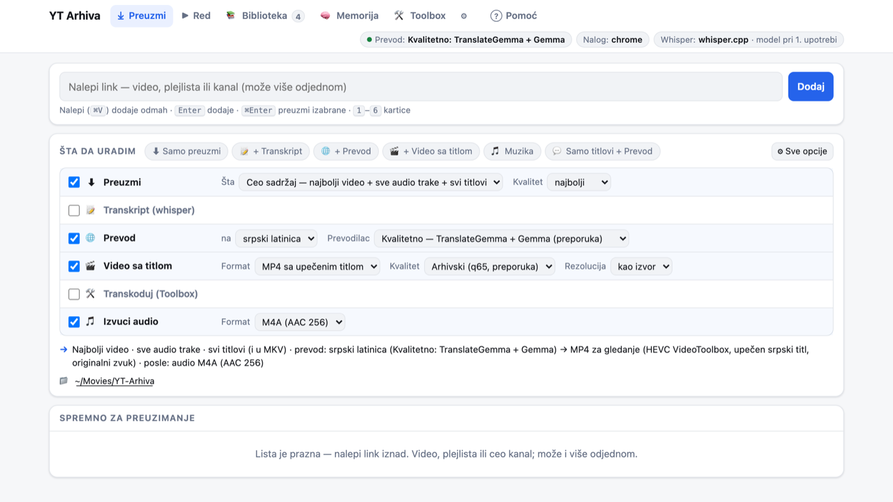
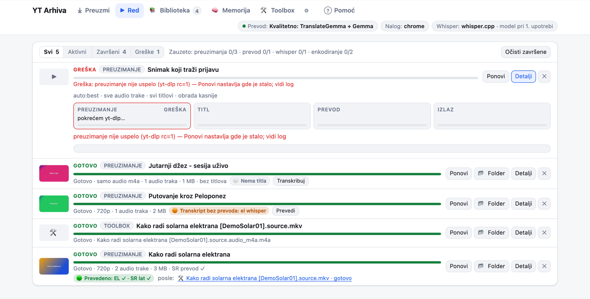
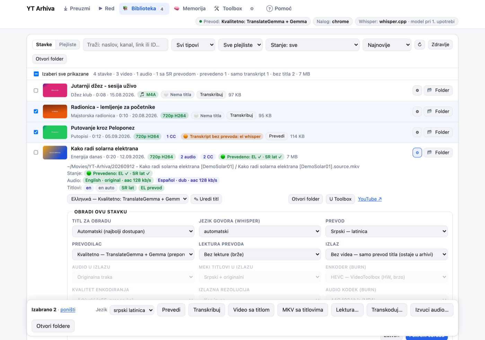
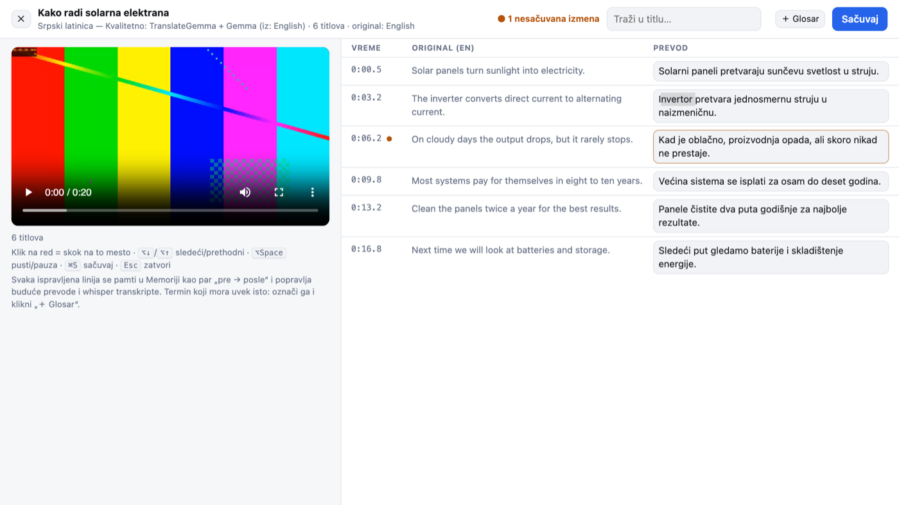
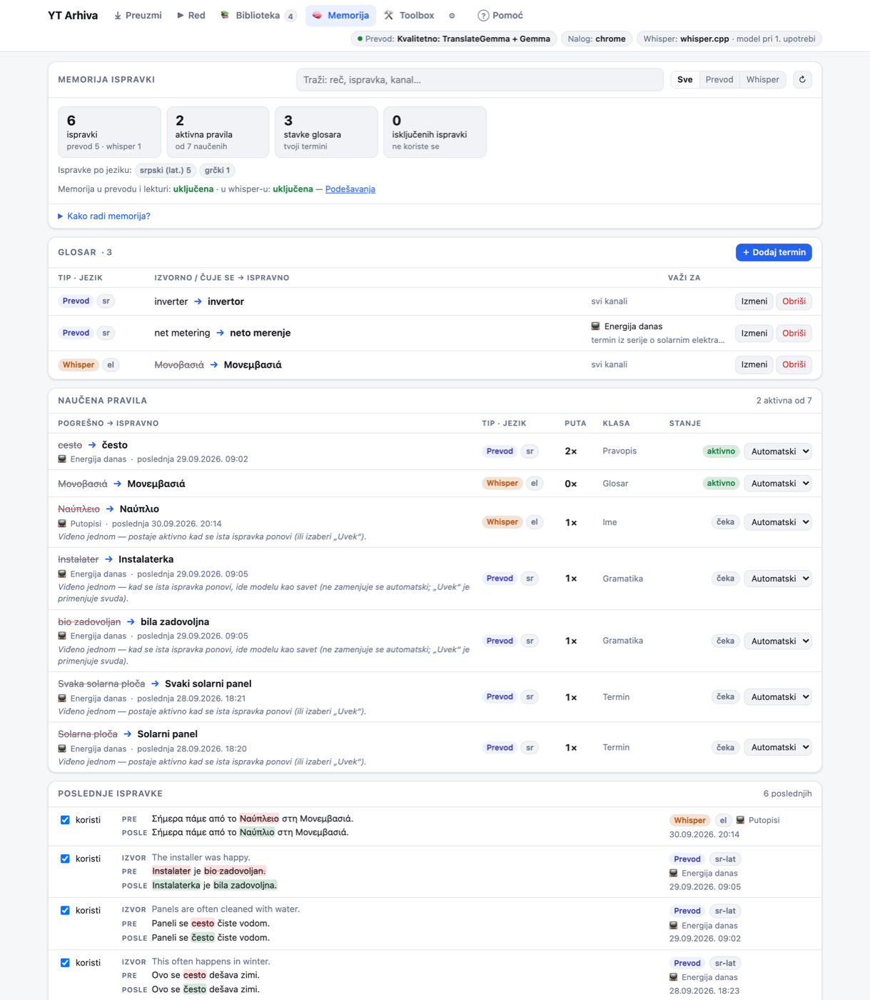
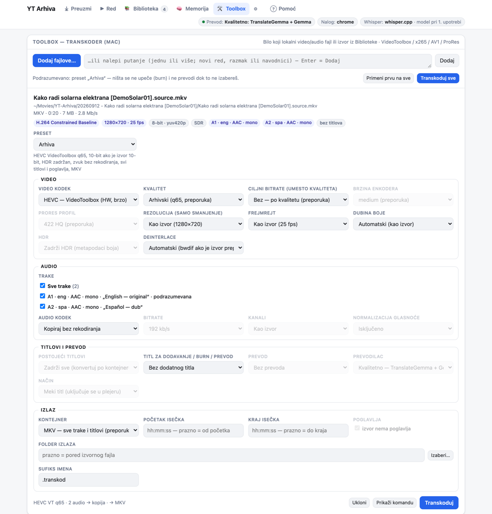
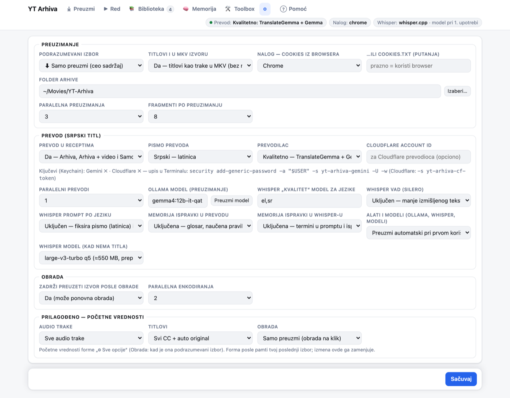

1. Šta je YT Arhiva
YT Arhiva je program za Mac koji preuzima YouTube video u tvoju ličnu arhivu na disku. Radi sa tvojim YouTube
nalogom (i sa Premium nalogom) tako što koristi kolačiće (cookies) iz Chrome-a u kome si prijavljen. Programom upravljaš
iz pregledača, na adresi http://127.0.0.1:8790. Ta strana radi samo na tvom računaru — panel prima samo
lokalne zahteve.
Šta sve radi:
- Preuzima ceo sadržaj: najbolji video, svaku audio traku (originalnu, sinhronizovane, opisnu za slabovide) i sve titlove. Sve ide u jedan MKV fajl, a titlovi i kao SRT fajlovi. Može i samo audio (sa omotom i tagovima) ili samo titlovi.
- Pravi transkript govora lokalnim programom whisper, kad video nema titl (ili uvek, ako tako izabereš).
- Prevodi titl na srpski (latinica ili ćirilica) i na grčki — lokalno, bez interneta, ili preko Gemini, Cloudflare ili Claude servisa ako ih sam izabereš.
- Pravi video sa titlom: MP4 sa upečenim titlom ili MKV sa mekim titlovima.
- Editor titla sa pregledom videa. Svaka ispravka se pamti u Memoriji ispravki i popravlja sledeće prevode i transkripte.
- Toolbox: transkoder za bilo koji video ili audio fajl sa diska.
Šta ide na internet. Preuzimanje sa YouTube-a; pri prvoj upotrebi preuzimanje alata i modela (Homebrew, Ollama modeli, whisper modeli); i tekst titla, ali samo ako za prevod ili lekturu izabereš Gemini, Cloudflare ili Claude. Lokalni prevod i transkript rade na tvom Mac-u.
Program ima šest kartica u zaglavlju: ⤓ Preuzmi, ▶ Red, 📚 Biblioteka, 🧠 Memorija, 🛠 Toolbox i ⚙ (Podešavanja). Pored njih je Pomoć, koja otvara ovo uputstvo. Desno su pilule stanja: Prevod (koji prevodilac i da li radi), Nalog (odakle su kolačići) i Whisper.
2. Instalacija
Zahtevi
- Mac sa Apple Silicon procesorom (M1 i noviji) i macOS. Installer odbija Intel Mac (osim uz
--force, što nije podržano). - Homebrew (brew.sh). Ako ga nema, installer pita da li da ga instalira.
- Internet tokom instalacije i pri prvom korišćenju prevoda i transkripta.
- Mesta na disku: vidi procenu prostora.
Paketi
| Fajl | Kako se instalira |
|---|---|
yt-arhiva-3.2.1.tar.gz | Raspakuj i pokreni installer u Terminalu (koraci ispod). Uz
njega je .sha256 za proveru: shasum -a 256 -c yt-arhiva-3.2.1.tar.gz.sha256. |
yt-arhiva-3.2.1.pkgsamo ako je priložen uz izdanje | Dvoklik instalira program u /Applications/YT Arhiva/app.
Posle toga jednom, kao običan korisnik, u Terminalu:"/Applications/YT Arhiva/app/installer/install.sh" --prefix "/Applications/YT Arhiva"Tada YT Arhiva.app ide u ~/Applications, a podaci u
~/Library/Application Support/YT Arhiva. |
YT-Arhiva-Uputstvo-3.2.1.pdf | Ovo uputstvo kao PDF. |
Instalacija iz .tar.gz u tri koraka
- Otvori aplikaciju Terminal (Spotlight: ⌘ Space, ukucaj „Terminal“) i pređi u folder
gde je preuzet paket, npr.
cd ~/Downloads. - Raspakuj i pokreni installer:
Za pregled bez ikakvih izmena:tar -xzf yt-arhiva-3.2.1.tar.gz cd yt-arhiva-3.2.1 ./installer/install.sh./installer/install.sh --dry-run. - Otvori YT Arhiva iz
~/Applications(Finder → Go → Home → Applications, Launchpad ili Spotlight). Zatim uradi korake iz Prvo pokretanje i dozvole.
Šta installer radi
- Proverava da li je Mac Apple Silicon i koliko ima mesta na disku.
- Preko Homebrew-a instalira
yt-dlp,denoiffmpeg-full(ono što je već instalirano preskače). - Kopira program u
~/Applications/YT Arhiva/app; podaci idu u~/Applications/YT Arhiva/data. - Pravi
~/Applications/YT Arhiva.app: dvoklik pokreće panel u pozadini (ako već ne radi) i otvarahttp://127.0.0.1:8790. - Po želji: pokretanje pri prijavi na Mac, Ollama modeli za prevod, whisper model.
Installer može da se pokrene više puta — tako se i ažurira. Ne dira podešavanja, arhivu ni modele, i ne pravi
.app ponovo ako se ništa bitno nije promenilo (da dozvole iz macOS-a ostanu).
Šta se instalira odmah, a šta pri prvoj upotrebi
| Kada | Šta |
|---|---|
| Odmah (installer) | yt-dlp (preuzimanje sa YouTube-a), deno (yt-dlp ga koristi
za YouTube JavaScript proveru), ffmpeg-full (spajanje traka, upečen titl preko libass, VideoToolbox enkoderi). |
| Prvi lokalni prevod | Ollama (brew install ollama) i modeli
gemma4:12b-it-qat (7,2 GB) i translategemma:12b (8,1 GB) — ukupno oko 15 GB. |
| Prvi transkript | whisper.cpp (brew install whisper-cpp), whisper model
large-v3-turbo-q5_0 (oko 0,55 GB), mali VAD model, a za grčki i srpski i tačniji
large-v3-q5_0 (1,08 GB). |
Ovo automatsko preuzimanje radi kad je u Podešavanjima „Alati i modeli“ = Preuzmi automatski pri prvom
korišćenju (podrazumevano). Napredak se vidi u ▶ Red, u fazi Prevod ili Titl. Ako želiš sve odmah, koristi
--full (Ollama i whisper.cpp), --models (Ollama modeli) i --whisper (whisper model).
Procena prostora
| Šta | Koliko |
|---|---|
| Ollama modeli (oba) | 15,3 GB; installer upozorava ako je slobodno manje od 18 GB |
| Whisper model (turbo) | oko 0,55 GB |
| Whisper „kvalitet“ model | 1,08 GB (preuzima se tek za grčki/srpski) |
| Arhiva videa | zavisi od videa — najveći deo prostora |
Arhivu i modele drži na eksternom disku: folder arhive menjaš u ⚙ Podešavanja → Folder arhive,
a folder za modele pri instalaciji opcijom --models-dir. Kad sam preuzima Ollama model (pri prvom prevodu),
panel traži bar 3 GB slobodnog prostora više od veličine modela.
Opcije installera
| Opcija | Šta radi |
|---|---|
--dry-run | samo ispiše šta bi uradio, ništa ne menja |
--full | odmah instalira i Ollama i whisper.cpp (inače pri prvom korišćenju) |
--models / --no-models | preuzme oba Ollama modela (prvo pokaže slobodan prostor) / ne pita za modele.
Ollama mora već biti instaliran, ili dodaj --full; inače installer staje sa porukom
„ollama nije instaliran“. |
--models-dir DIR | folder za Ollama modele, npr. na eksternom disku (upisuje se u yta.env aplikacije; podešavanja shell-a se ne menjaju) |
--whisper [IME] | preuzme whisper model (podrazumevano large-v3-turbo-q5_0) |
--autostart / --no-autostart | panel se pokreće pri prijavi na Mac, bez otvaranja pregledača / isključi to |
--port N | drugi port panela (podrazumevano 8790) |
--prefix DIR | druga lokacija umesto ~/Applications/YT Arhiva (tada je i .app
u DIR, osim ako u DIR ne može da se piše, npr. posle .pkg) |
--app-path PATH | gde ide YT Arhiva.app |
--no-brew | preskoči Homebrew (samo proveri da li alati postoje) |
--rebuild-app | napravi .app iznova (dozvole tada treba dati ponovo) |
--open | otvori aplikaciju na kraju |
--yes, -y | „da“ na sva pitanja (modeli samo uz --models) |
--force | nastavi i kad Mac nije Apple Silicon (nije podržano) |
Primer — sve odmah, modeli na eksternom disku, pokretanje pri prijavi:
./installer/install.sh --full --models --whisper --autostart --models-dir "/Volumes/Disk/ollama-models"3. Prvo pokretanje i dozvole
Pokretanje
- YT Arhiva.app (preporuka): dvoklik u
~/Applications. Panel se pokreće u pozadini i otvara se pregledač. Zatvaranje taba ne gasi panel. - Iz Terminala:
~/Applications/YT\ Arhiva/app/installer/launcher.sh. Dodatne opcije:--status(radi li panel),--stop(ugasi),--restart(ponovo pokreni prekoYT Arhiva.app),--no-browser(bez otvaranja pregledača).
Zašto su bitne dozvole i zašto ponekad Terminal
Za preuzimanje sa tvojim nalogom panel (preko yt-dlp) čita Chrome kolačiće: fajl iz tvog Chrome profila i ključ „Chrome Safe Storage“ iz Keychain-a. macOS to dozvoljava samo programu kome si to odobrio, a dozvolu traži i dobija program koji je pokrenuo panel:
- panel pokrenut iz
YT Arhiva.app(dvoklik, pri prijavi,launcher.sh --restart) → dozvole na ime YT Arhiva; - panel pokrenut iz Terminala (
launcher.shbez opcija ilipython3 panel.py) → dozvole na ime Terminal.
Ako provera linka ili preuzimanje javi grešku sa kolačićima, tekst greške predlaže rešenje: Full Disk Access za
Terminal i pokretanje panela iz Terminala. Ceo tekst vidiš kad zadržiš miš na grešci u ⤓ Preuzmi, ili u ▶ Red →
Detalji. Dozvola data Terminalu ostaje i kad se YT Arhiva.app napravi ponovo
(--rebuild-app), dok novoj .app dozvole moraš dati iznova. Dovoljno je podesiti jedan od ta dva
programa — onaj iz kog pokrećeš panel.
Full Disk Access (pristup fajlovima)
- Otvori System Settings → Privacy & Security → Full Disk Access.
- Klikni + i izaberi program iz kog pokrećeš panel:
~/Applications/YT Arhiva.app(u dijalogu ⌘⇧G i upiši~/Applications) ili Terminal (/System/Applications/Utilities/Terminal.app). - Uključi prekidač pored njega.
- Ponovo pokreni panel da bi dozvola važila:
za
YT Arhiva.app:~/Applications/YT\ Arhiva/app/installer/launcher.sh --restart; za Terminal:launcher.sh --stop, zatvori Terminal (⌘Q), otvori ga ponovo i pokrenilauncher.sh.
Ako macOS pita za eksterni disk („files on a removable volume“), klikni Allow — to se pamti.
Keychain „Chrome Safe Storage“ → Always Allow
Pri prvom preuzimanju sa nalogom macOS prikaže prozor: „security wants to use your confidential information stored in "Chrome Safe Storage"“.
- Ukucaj lozinku za prijavu na Mac.
- Klikni Always Allow (Uvek dozvoli), ne samo „Allow“. „Allow“ važi samo tog puta, pa se pitanje ponavlja.
Ako je već kliknuto „Allow“: otvori Keychain Access → pretraga Chrome Safe Storage → dvoklik →
kartica Access Control → + → ⌘⇧G → /usr/bin/security → Save Changes.
Dozvola važi za alat /usr/bin/security, koji yt-dlp koristi; ne menja se sa ažuriranjem Homebrew-a.
Posle „Always Allow“ svaki program pokrenut pod tvojim nalogom može preko security da
pročita ključ Chrome kolačića bez pitanja. Ako to ne želiš, klikći „Allow“ svaki put, ili u ⚙ Podešavanja koristi
cookies.txt umesto pregledača.
Drugi pregledač (Brave, Edge, Firefox, Safari, Chromium, Vivaldi, Opera) ili „Bez naloga“ biraš u ⚙ Podešavanja →
Nalog — cookies iz browsera, a putanju do cookies.txt u polju …ili cookies.txt (putanja).
Provera: nalepi jedan link u ⤓ Preuzmi. Ako se pojave naslov i bedževi (npr. „1080p“, „2 audio“, „3 CC“), nalog radi. Greška se vidi crvenim u redu; ceo tekst, sa predlogom šta da uradiš, vidiš kad zadržiš miš na njoj.
4. Preuzimanje

1) Nalepi link
- Nalepi (⌘V) link videa, plejliste ili kanala — može više odjednom. Lepljenje odmah dodaje link na listu; Enter ili Dodaj dodaje ono što je ukucano. ⌘V radi bilo gde na kartici.
- Prihvata i kanal kao
@imei ID videa od 11 znakova. Isti link se ne dodaje dva puta.
2) Provera linka
Svaki link se odmah proveri (najviše četiri istovremeno). Red dobija naslov, kanal, trajanje, procenu veličine i bedževe: najveća rezolucija (npr. 4K★ — zvezdica znači Premium format), HDR, broj audio traka, broj titlova (3 CC, auto CC ili bez CC), SR CC ako YouTube ima srpski titl, i LIVE / ZAKAZAN.
- Ako video već imaš u biblioteci: bedž ✓ imaš, i red je podrazumevano odčekiran. Šta tačno već imaš (i bedž stanja prevoda) piše u detaljima reda (⚙): „U biblioteci već imaš“.
- ⚙ na redu otvara detalje za taj video: najveći kvalitet, audio trake, titlovi i šta već imaš u biblioteci. Tu biraš samo za taj video: tačan video format, audio trake, titlove u arhivu, titl za prevod, audio u videu sa titlom i „preuzmi ponovo“. Vrati na izbor gore poništava izmene.
- Link videa koji je deo plejliste ima dugme 📃 cela plejlista.
Plejliste i kanali
Plejlista ili kanal je grupa: zaglavlje sa nazivom, brojem stavki, „u biblioteci X/Y“, brojem novih i uklonjenih stavki od prošle provere. Ispod su stavke.
- Sve / Ništa / Samo novi / Nove (N) — brz izbor; Filter po naslovu; ⇧ + klik na checkbox bira opseg.
- podfolder „naziv“ — stavke idu u podfolder sa imenom plejliste (podrazumevano uključeno).
- Klik na stavku (ili ⚙) proveri baš tu stavku i pokaže njene formate, audio trake i titlove.
- Proveri sve (ili „Proveri izabrane“) proverava stavke u pozadini, najviše tri istovremeno; Stani prekida. Provera nije uslov za preuzimanje.
3) Šta da uradim
Ispod polja za link je lista koraka sa checkbox-ovima. Čekiran korak dobija menije u istom redu. Podrazumevano je čekirano samo preuzimanje; ostalo dodaješ po izboru. Izbor se pamti u pregledaču.
| Korak | Izbori i šta radi |
|---|---|
| ⬇ Preuzmi (uvek) | Šta: Ceo sadržaj — najbolji video + sve audio trake + svi titlovi; Samo audio; Samo titlovi. Za ceo sadržaj Kvalitet (najbolji ili do 2160p … 360p); za samo audio Format: original bez rekodiranja (Opus/AAC), MP3 320, MP3 V0, M4A AAC 256, Opus 160, FLAC. |
| 📝 Transkript (whisper) | Transkript na originalnom jeziku, bez prevoda. Jezik (automatski ili izabran), Kada: samo kad YouTube nema titl ili uvek. Nije moguće uz „Samo titlovi“ (nema zvuka). |
| 🌐 Prevod | na: srpski latinica, srpski ćirilica, grčki; Prevodilac (vidi Prevod). |
| 🎬 Video sa titlom | Format: MP4 sa upečenim titlom, MKV sa mekim titlovima ili oba; Kvalitet i Rezolucija (za upečen titl). Bez čekiranog Prevoda koristi se originalni titl. Nije moguće uz Samo audio / Samo titlovi. |
| 🛠 Transkoduj (Toolbox) | Posle preuzimanja pokreće poseban Toolbox posao: Preset i Titl (bez, meki, upečen). Titl uzima postojeći prevod — čekiraj Prevod ako ga nema. Upečen titl traži preset koji rekodira video. |
| 🎵 Izvuci audio | Posle preuzimanja poseban posao: Format M4A (AAC 256), MP3 320 ili FLAC, iz originalne audio trake. |

Brzi izbor
Dugmići iznad liste jednim klikom postavljaju checkbox-ove: ⬇ Samo preuzmi, 📝 + Transkript (whisper uvek), 🌐 + Prevod, 🎬 + Video sa titlom (prevod + video), 🎵 Muzika (samo audio, MP3 320) i 💬 Samo titlovi + Prevod. Označen je onaj koji odgovara trenutnom izboru.
⚙ Sve opcije
Puna forma za one koji žele sve da podese. Dok je otvorena, ona određuje preuzimanje i obradu; redovi Transkoduj i Izvuci audio i dalje važe. Forma pamti poslednji izbor. Sadrži:
- Preuzimanje: Video (najbolji, do određene rezolucije, samo audio, bez videa), Audio trake (sve ili samo originalna), Format zvuka (za samo audio), Titlovi (svi CC + automatski na originalnom jeziku; isto + YouTube automatski prevodi na sve jezike; samo najbolji za prevod; bez titlova), Folder arhive.
- Obrada (čekiraj „transkript / prevod / video odmah posle preuzimanja“): titl za obradu, jezik govora, prevod, prevodilac, lektura prevoda (drugi prolaz, oko 2× sporije), izlaz (bez videa, SRT pored videa, MKV sa mekim titlovima, upečen titl, oba), audio u izlazu, meki titlovi u izlazu, enkoder (HEVC ili H.264 VideoToolbox, x265, x264), kvalitet, rezolucija, audio kodek, zadrži izvor.
„Svi CC + YouTube automatski prevodi“ pravi mnogo fajlova, a YouTube tada ume da vrati grešku 429 (previše zahteva).
4) Folder i slanje
- 📁 ispod sažetka je folder arhive. Klik bira drugi folder samo za ovo preuzimanje; vrati vraća folder iz Podešavanja.
- Donja traka: Preuzmi (N) šalje sve izabrane u red jednim klikom (ili ⌘Enter), Očisti listu, i sažetak (broj stavki, izbor, procena veličine). Poslate stavke nestaju sa liste i pojavi se poruka „Dodato u red“.
Ceo sadržaj — šta tačno dobijaš
- Jedan video, najkvalitetniji (ili do izabrane rezolucije).
- Svaku posebnu audio traku: originalnu, sinhronizovane (dub) i opisnu (za slabovide), sa jezikom i nazivom.
- Sve ručne titlove na svim jezicima i automatski titl na originalnom jeziku, kao SRT u
subs/. Uz podešavanje „Titlovi i u MKV izvoru“ (podrazumevano Da) isti titlovi ulaze i kao trake u MKV, bez rekodiranja. - Omot, poglavlja i metapodatke.
Prenosi uživo
Prenos koji je u toku (LIVE) snima se od početka. Zakazan prenos čeka da počne. U Redu dugme ■ Zaustavi snimanje zadržava ono što je snimljeno i nastavlja obradu.
5. Red poslova

Svaki posao je jedan red: sličica, stanje (u redu, radi, gotovo, greška, otkazano), vrsta (PREUZIMANJE, OBRADA, TOOLBOX), naslov, traka napretka i trenutna faza (npr. „Preuzimanje 42% · brzina · ETA“, „Whisper 30%“, „Prevod 3/10“, „Burn 55%“).
| Dugme | Šta radi |
|---|---|
| Otkaži | prekida posao koji radi ili čeka |
| ■ Zaustavi snimanje | samo za prenos uživo: zadrži snimljeno i nastavi |
| Ponovi | ponovo pokreće posao; preuzimanje nastavlja gde je stalo |
| 📂 Folder | otvara folder stavke u Finder-u |
| Detalji | četiri faze (Preuzimanje, Titl, Prevod, Izlaz; za Toolbox: Ulaz, Titl, Prevod, Transkod) i log posla |
| ✕ | uklanja završen posao sa liste (fajlovi ostaju) |
- Filteri Svi / Aktivni / Završeni / Greške; Očisti završene uklanja gotove i otkazane poslove sa liste. Desno od filtera piše koliko poslova svake vrste trenutno radi od dozvoljenih, npr. „Zauzeto: preuzimanja 1/3 · prevod 0/1 · whisper 0/1 · enkodiranje 0/2“. Broj na kartici ▶ Red je broj aktivnih poslova.
- Završen posao preuzimanja ili obrade pokazuje bedž stanja stavke (vidi Biblioteka) sa dugmetom Prevedi ili Transkribuj. Koraci posle preuzimanja (Transkoduj, Izvuci audio) su linkovi „posle: …“; preskočen korak ima žuti bedž sa razlogom.
- Poslovi ostaju na listi i posle gašenja panela. Posao koji je radio kad je panel ugašen dobija grešku „prekinuto (panel restartovan) — klikni Ponovi“.
6. Biblioteka

Biblioteka je katalog svega preuzetog. Svaki red ima sličicu, naslov, kanal, trajanje, datum objave i bedževe: izvor (npr. 720p H264, 🎵 M4A ili bez izvora), broj audio traka, broj titlova, stanje prevoda, broj izlaza i veličinu. Desno su ⚙ (detalji) i 📂 Folder.
Bedž stanja
| Bedž | Značenje i dugme |
|---|---|
| 🟢 Prevedeno | Ima bar jedan prevod (srpski latinica/ćirilica ili grčki) ili srpski titl sa YouTube-a. Bedž pokazuje jezike prevoda; kad je prevod samo na jedan jezik, i prevodioca i datum. „✓ lektura“ znači da je rađena lektura. |
| 🟠 Transkript bez prevoda | Ima titl ili transkript (ručni CC, YouTube automatski ili whisper), ali nema prevoda. Dugme Prevedi dodaje jedan posao prevoda. |
| ⚪ Nema titla | Nema ni titla ni transkripta. Dugme Transkribuj (whisper) se pojavi kad postoji izvor sa zvukom. |
Isti bedž se vidi i u ⤓ Preuzmi („U biblioteci već imaš“) i u ▶ Red. U Biblioteci Prevedi prevodi na jezik iz menija Jezik u traci za izabrane; na ostalim mestima na jezik iz reda Prevod.
Pretraga i filteri
- Pretraga po naslovu, kanalu, linku ili ID-u (/ skače u polje).
- Tip: svi, video, samo audio, bez izvora; plejlista; sortiranje: najnovije, naslov A–Z, veličina, datum objave.
- Stanje: sve, 🟢 Prevedeno, 🟠 Samo transkript bez prevoda, ⚪ Bez titla, i u grupi „Srpski prevod“: sa SR prevodom / bez SR prevoda.
- ↻ osvežava, Zdravlje proverava katalog, Otvori folder otvara folder arhive.
Rad sa više stavki
Izaberi stavke checkbox-om (ili klikom po redu; ⇧ + klik bira opseg; „Izaberi sve prikazane“). Dole se pojavi traka Izabrano N sa menijem Jezik (srpski latinica, srpski ćirilica, grčki) i dugmićima:
| Dugme | Šta radi |
|---|---|
| Prevedi | Prevod titla na izabrani jezik. Preskače stavke koje već imaju taj prevod ili srpski titl sa YouTube-a. Stavka bez titla prvo dobija whisper transkript. |
| Transkribuj | Whisper transkript na originalnom jeziku, bez prevoda. Preskače stavke koje već imaju whisper transkript i one bez izvora zvuka. |
| Video sa titlom | MP4 sa upečenim titlom (HEVC). Koristi postojeći prevod; ako ga nema, prvo prevede. |
| MKV sa titlovima | MKV sa mekim titlovima, bez rekodiranja. |
| Lektura… | Lektor: Claude Sonnet, Claude Opus ili Gemini. Uzima najnoviji prevod i njegov izvor, ispravlja gramatiku, rod i padež, značenje i imena. Nastaje nov titl „… — Claude lektura“ (ili Gemini), stari ostaje. Opcija „ponovo i za stavke koje već imaju lekturu“. |
| Transkoduj… | Toolbox preset + titl na jeziku iz menija Jezik (ne, meki, upečen). Izlaz ide u folder
stavke, sufiks je kratka oznaka preseta (npr. .arhiva, .apple, .kompat).
Kad je izabran titl, preskaču se stavke koje nemaju ni prevod ni srpski titl sa YouTube-a. |
| Izvuci audio… | Izvuci audio (bez rekodiranja): originalna traka kakva je na YouTube-u (AAC → .m4a, Opus → .opus, ostali kodeci → .mka), sa omotom i tagovima. Ili konverzija: M4A (AAC 256), MP3 320, FLAC. |
| Otvori foldere | Otvara foldere u Finder-u (najviše 5). |
Posle klika poruka kaže koliko je poslova dodato i koliko je stavki preskočeno, sa razlogom.
Detalji stavke (⚙)
- Putanja, plejliste, stanje, audio trake (jezik · uloga · kodek) i titlovi (npr. en, en auto, el whisper, SR lat, EL prevod).
- Izbor titla i ✎ Uredi titl (vidi Editor titla), Otvori folder, U Toolbox (izvor ide u 🛠 Toolbox), YouTube ↗.
- Obradi ovu stavku: ista forma obrade kao u „⚙ Sve opcije“ + Pokreni obradu. Obrada može da se ponavlja koliko god puta, sa različitim izborima.
Plejliste
Dugme Plejliste (pored „Stavke“) prikazuje plejliste i kanale koje si proveravao: koliko stavki imaš, koliko nedostaje, koliko je uklonjeno sa YouTube-a i koliko je novih. Dugmići:
- ↻ Osveži — ponovo proveri plejlistu na YouTube-u (nove i uklonjene stavke).
- ⤓ Preuzmi nedostajuće — preuzme sve što nedostaje, trenutnim izborom iz ⤓ Preuzmi, u podfolder plejliste.
- 💿 Napravi album — za samo-audio stavke upiše tagove albuma (album, broj numere, izvođač) bez rekodiranja i
napravi
.m3u8listu po redosledu iz plejliste. - Klik na naziv plejliste prikazuje njene stavke u biblioteci.
Zdravlje kataloga
Zdravlje proverava: izvori koji nedostaju ili su skraćeni (kraći od 98% trajanja), titlovi i izlazi koji
nedostaju, i folderi koji u imenu imaju [ID], a nemaju indeks (.yta/manifest.json) pa se ne vide u
biblioteci. Obnovi indeks pravi indeks za takve foldere i vraća ih u biblioteku.
7. Editor titla i ＋ Glosar

Otvaranje: 📚 Biblioteka → ⚙ na stavci → izaberi titl (prevodi su prvi, najnoviji gore) → ✎ Uredi titl.
- Levo je pregled videa ili zvuka sa trenutnim titlom. Neke MKV fajlove (npr. HEVC/AV1 video ili AC-3 zvuk) pregledač ne može da pusti — tada editor to napiše, a uređivanje radi normalno.
- Desno su kolone Vreme, Original (titl iz kog je nastao prevod) i Prevod. Kod transkripta i originalnog titla kolone Original nema, a tekst je u koloni Tekst. Klik na red skače na to mesto u videu.
- Izmenjeni red dobija oznaku ●, a gore piše broj nesačuvanih izmena. Sačuvaj ili ⌘S. Prazan red se pri čuvanju briše.
- Traži u titlu traži u prevodu i u originalu; Enter ide na sledeći pogodak, ⇧Enter na prethodni.
- Prečice: ⌥↓ / ⌥↑ sledeći / prethodni titl, ⌥Space pusti/pauza, Esc zatvori (pita ako ima nesačuvanog).
Šta se dešava pri čuvanju. Prethodna verzija titla ide u .yta/history/ u folderu stavke. Svaka
ispravljena linija prevoda ili transkripta (whisper ili YouTube automatski titl) pamti se u Memoriji kao par
„pre → posle“ i popravlja buduće prevode i transkripte. Ispravka ručnog YouTube titla se čuva u fajlu, ali ne ulazi u
Memoriju. Za učenje se računa samo izmena teksta jedne linije (ne deljenje reda).
＋ Glosar
Termin koji uvek mora da se prevede isto (ime, naziv, stručni izraz):
- Označi reč u titlu — u koloni originala ili u prevodu.
- Klikni ＋ Glosar. Otvori se mala forma, a označen tekst je već upisan. Dugme iz označenog upisuje novu oznaku.
- Proveri polja: Tip (Prevod — termin u prevodu, ili Whisper — termin u transkriptu), Jezik, Izvorni oblik (kako piše u originalu), Prevod — uvek ovako (ili za whisper Tačan termin i opciono Kako ga whisper pogrešno čuje), Važi za (sve kanale ili samo jedan kanal), Napomena.
- Dodaj u glosar.
8. Memorija ispravki

Memorija pamti tvoje ispravke iz editora titla i koristi ih u sledećim prevodima i transkriptima. Nema treninga modela: sve je lokalno i deluje od sledećeg prevoda.
Delovi kartice
- Vrh kartice (pregled): broj ispravki (prevod / whisper), aktivna pravila, stavke glosara, isključene ispravke, ispravke po jeziku i da li je memorija uključena. Pretraga i filter Sve / Prevod / Whisper, ↻ osvežava, a „Kako radi memorija?“ ukratko objašnjava pravila.
- Glosar: tvoji termini. ＋ Dodaj termin, Izmeni, Obriši. Prevodni termin: prevodilac za taj izvorni oblik uvek koristi tvoj prevod (ima prednost nad modelom). Whisper termin: ide whisper-u kao nagoveštaj, a pogrešno čut oblik se posle transkripcije zamenjuje tačnim.
- Naučena pravila: „pogrešno → ispravno“, tip i jezik, koliko puta je viđeno, klasa i stanje.
- Poslednje ispravke: izvor, „pre“ i „posle“, kanal i vreme. Prekidač koristi isključuje ispravku koja ne valja — tada se ne koristi ni za pravila ni kao primer.
Šta se uči automatski, a šta ne
| Klasa | Primer | Automatski? |
|---|---|---|
| Ime | veliko slovo usred rečenice ili broj: „kenobi → Kenobi“, „dva → 2“ | da, kad je viđeno bar 2 puta |
| Pravopis | ista reč, druge kvačice ili akcenti: „cesto → često“ | da, kad je viđeno bar 2 puta |
| Termin | drugačiji izraz od više reči | da, kad je viđeno bar 2 puta |
| Gramatika | pojedinačna reč, rod, padež, vreme, ti/vi: „bio → bila“ | ne — ide modelu samo kao savet |
- Ako je ista greška ispravljena na različite načine, to je konflikt i ništa od toga nije automatsko.
- Nije pravilo: promena koja samo spušta veliko slovo, samo cifre, i veliko slovo na početku rečenice.
- Prevodna memorija: ista rečenica (bar 4 reči i 20 znakova) iz istog kanala dobija tvoj ispravljen prevod.
- Uz svaki blok prevoda model dobija i najsličnije ranije ispravke kao primere.
Stanje pravila
| Stanje | Značenje |
|---|---|
| Automatski | podrazumevano: odluka po pravilima iznad. Bedž pokazuje aktivno, čeka (viđeno jednom), savet modelu (gramatika) ili konflikt. |
| Uvek | primenjuje se na svaki novi prevod, i posle jedne pojave i za gramatiku |
| Nikad | isključeno: ne primenjuje se i ne ide modelu |
Memoriju uključuješ i isključuješ u ⚙ Podešavanja: Memorija ispravki u prevodu (prevod i lektura) i Memorija ispravki u whisper-u (termini u whisper promptu, zamene u transkriptu i u YouTube automatskom titlu pre prevoda).
9. Prevod
Titl se prevodi na srpski latinica, srpski ćirilica ili grčki. Ćirilica nastaje iz latiničnog prevoda pravilnom transliteracijom; imena koja se pišu latinicom ostaju latinicom.
Izvor za prevod je „Automatski“: ručni YouTube titl → automatski YouTube titl → whisper transkript (ako nema titla). Ako YouTube ima ručni srpski titl, on se koristi direktno, bez prevoda.
Prevodioci
| Prevodilac | Kako radi |
|---|---|
| Kvalitetno — TranslateGemma + Gemma (preporuka, podrazumevano) | Lokalno, besplatno i privatno. TranslateGemma napravi nacrt, Gemma prevodi sa kontekstom videa, pa spaja. Koristi oba Ollama modela. |
| Brzo — gemma4:12b-it-qat | Lokalno, samo Gemma. Brže od „Kvalitetno“. |
| Samo TranslateGemma | Lokalno, za grčki i druge jezike; za srpski se koristi „Kvalitetno“. |
| Gemini Flash-Lite / Gemini Flash | Besplatni cloud, samo za javni sadržaj. Treba ključ u Keychain-u. Kad se potroši kvota, prelazi na Cloudflare, a zatim na lokalni model (za srpski Gemma, za grčki TranslateGemma). |
| Cloudflare Gemma 4 26B | Besplatni cloud, samo za javni sadržaj. Treba token u Keychain-u i Account ID u Podešavanjima. Kad ne radi, prelazi na lokalni model (za srpski Gemma, za grčki TranslateGemma). |
| Claude Sonnet / Claude Opus | Preko Claude CLI (claude) i tvoje pretplate. Treba instaliran i prijavljen claude. |
Prevodilac biraš u redu Prevod (⤓ Preuzmi), u formi obrade, ili kao podrazumevani u ⚙ Podešavanja. Bez ključa cloud prevodilac u listi piše „(nema ključa → lokalno)“.
Kvalitet i brzina, okvirno
- Lokalni modeli od 12B prave oko jednu grešku na 5–8 redova. Za važne videe koristi Claude ili, posle prevoda, Lektura… u Biblioteci, pa ispravi ostatak u editoru (ispravke idu u Memoriju).
- „Lektura prevoda: Drugi prolaz“ u formi obrade je oko 2× sporija od prevoda bez lekture.
- Lokalni prevod koristi grafički procesor Mac-a; zato je „Paralelni prevodi“ podrazumevano 1.
- Prevod se pamti u kešu stavke: ponovljen prevod istog titla istim prevodiocem ne prevodi ponovo ono što je već prevedeno.
Kako se dobija dobar prevod
Pre prevoda model dobije naslov, opis i početak titla i napravi kratak sažetak, spisak imena i način obraćanja (ti/vi). Prevodi se u blokovima po scenama (lokalno do 30 titlova u bloku). Posle prevoda provera traži prazne, neprevedene, predugačke i redove sa mešanim pismom i te redove prevodi ponovo. Tvoj glosar i naučena pravila iz Memorije imaju prednost.
Gemini i Cloudflare ključevi (Keychain)
Ključevi se ne upisuju u fajlove; panel ih čita iz Keychain-a. U Terminalu:
security add-generic-password -a "$USER" -s yt-arhiva-gemini -U -w # pa nalepi Gemini API ključ
security add-generic-password -a "$USER" -s yt-arhiva-cf-token -U -w # Cloudflare API token-w na kraju znači da security traži ključ bez prikazivanja na ekranu; -U menja
postojeći ključ. Cloudflare Account ID upiši u ⚙ Podešavanja. Panel u Podešavanjima pokazuje
„Ključevi (Keychain): Gemini ✓/✗ · Cloudflare ✓/✗“ (osvežava se u roku od minuta).
security find-generic-password -a "$USER" -s yt-arhiva-gemini >/dev/null && echo postoji # provera
security delete-generic-password -a "$USER" -s yt-arhiva-gemini # brisanje10. Transkript (whisper)
Whisper pretvara govor iz audio trake u titl na originalnom jeziku. Radi lokalno (whisper.cpp na Metal-u; ako on ne
uspe, program proba python whisper, ako je instaliran). Rezultat je subs/whisper.srt, u biblioteci „Whisper (jezik)“.
Kada se pokreće
- Red 📝 Transkript u ⤓ Preuzmi: „samo kad YouTube nema titl“ ili „uvek“.
- Transkribuj u Biblioteci (bedž ⚪ ili traka za izabrane).
- Kad tražiš prevod, a video nema nijedan titl.
- U Toolbox-u, kad je titl „Lokalni whisper“.
Modeli
| Model (⚙ Podešavanja → Whisper model) | Napomena |
|---|---|
| large-v3-turbo q5 | ≈550 MB, preporuka (podrazumevano) |
| large-v3-turbo | ≈1,6 GB |
| large-v3 | ≈3 GB, najtačniji, sporiji |
| medium | ≈1,5 GB |
| small | ≈470 MB, brz |
Za jezike iz polja Whisper „kvalitet“ model za jezike (podrazumevano el,sr) koristi se tačniji
large-v3-q5_0 (1,08 GB, 3–4× sporiji). Prazno polje = nikad. Modeli se preuzimaju jednom, u
~/Library/Application Support/YT Arhiva/whisper (drugi folder zadaje promenljiva YTA_WHISPER_DIR).
Jezik, VAD i prompt
- Jezik: „automatski“ uzima jezik iz YouTube podataka, a ako ga nema, prepoznaje ga iz prvih 30 sekundi. Može se izabrati i ručno (srpski, engleski, grčki, nemački, francuski, italijanski, španski i drugi).
- VAD (Silero): uključen podrazumevano — manje izmišljenog teksta na muzici i tišini.
- Prompt po jeziku: za srpski, grčki, engleski, španski, italijanski i nemački fiksira pismo (srpski = latinica) i interpunkciju i dodaje imena iz naslova. Uz uključenu Memoriju u whisper-u dodaju se i tvoji termini.
11. Toolbox

Toolbox je transkoder za bilo koji video ili audio fajl sa diska, i za izvore iz Biblioteke. Podrazumevano se ništa ne upeče (burn) i ne prevodi dok to ne izabereš.
- Dodavanje: Dodaj fajlove… (macOS dijalog), nalepi putanje u polje (Enter = Dodaj), ili Biblioteka → ⚙ → U Toolbox.
- Za svaki fajl: analiza (kontejner, trajanje, veličina, video kodek, rezolucija, fps, dubina boje, HDR, audio i titl trake), Preset i polja po grupama: Video, Audio (trake, kodek, bitrate, kanali, normalizacija glasnoće), Titlovi i prevod (postojeći titlovi; titl za dodavanje, upečen titl ili prevod: traka iz fajla, spoljni fajl ili lokalni whisper; prevod; način: meki ili upečen) i Izlaz (kontejner, isečak od–do, poglavlja, folder, sufiks).
- Polja koja nemaju smisla za izabrani kodek ili kontejner su sive (isključena).
- Prikaži komandu pokazuje tačnu ffmpeg komandu i upozorenja; Transkoduj šalje posao u ▶ Red; Ukloni.
- Gore: Primeni prvu na sve (kopira podešavanja prve kartice; audio i titl trake uparuje po jeziku) i Transkoduj sve.
- Izlaz ide pored izvora (ili u izabran folder), sa sufiksom
.transkod. Izvor se nikad ne prepisuje; ako fajl sa istim imenom postoji, dodaje se „ (2)“.
Preseti
| Preset | Šta pravi |
|---|---|
| Arhiva | HEVC VideoToolbox q65, 10-bit ako je izvor 10-bit, HDR zadržan, zvuk bez rekodiranja, svi titlovi i poglavlja, MKV |
| Apple (iPhone/iPad/Apple TV) | HEVC VideoToolbox q60 (hvc1), AAC 192k stereo, titlovi kao mov_text, MP4 |
| Kompatibilno svuda | H.264 VideoToolbox q60, 8-bit (HDR → SDR), AAC 192k stereo, najviše 1080p, MP4 |
| Manji fajl | x265 CRF 24 preset slow, Opus 128k, MKV (sporije od VideoToolbox-a) |
| AV1 SVT | SVT-AV1 CRF 30 preset 6, Opus 128k, MKV (najmanji fajl, najsporije) |
| Montaža (ProRes) | ProRes 422 HQ VideoToolbox, PCM zvuk, MOV (veliki fajl) |
| Samo remux | bez rekodiranja: video i zvuk kopirani, titlovi i poglavlja zadržani → MKV |
| Samo audio — M4A / MP3 / FLAC | AAC 256k / MP3 320k / FLAC, prva audio traka |
12. Podešavanja

Preuzimanje
| Polje | Šta znači |
|---|---|
| Podrazumevani izbor | Koji koraci su čekirani u ⤓ Preuzmi pri prvom otvaranju i kad ga ovde promeniš: Samo preuzmi (ceo sadržaj), Arhiva (+ prevod), Arhiva + video sa titlom, Muzika / podkast, Samo titlovi, ⚙ Sve opcije. Inače se pamti tvoj poslednji izbor. |
| Titlovi i u MKV izvoru | Da: titlovi ulaze i kao trake u MKV (bez rekodiranja). Ne: samo SRT fajlovi u subs/. |
| Nalog — cookies iz browsera | Chrome (podrazumevano), Brave, Edge, Firefox, Safari, Chromium, Vivaldi, Opera ili Bez naloga. |
| …ili cookies.txt | Putanja do cookies.txt; prazno = koristi pregledač. |
| Folder arhive | Gde se čuva arhiva (podrazumevano ~/Movies/YT-Arhiva); Izaberi… otvara dijalog. |
| Paralelna preuzimanja | Koliko videa se preuzima istovremeno (1–8, podrazumevano 3). |
| Fragmenti po preuzimanju | Delovi jednog videa koji se preuzimaju paralelno (1–16, podrazumevano 8). |
Prevod (srpski titl)
| Polje | Šta znači |
|---|---|
| Prevod u receptima | Da: izbori Arhiva, Arhiva + video i Samo titlovi prevode. Ne: bez prevoda. |
| Pismo prevoda | Srpski latinica ili ćirilica (podrazumevani jezik reda Prevod). |
| Prevodilac | Podrazumevani prevodilac (vidi Prevod). |
| Cloudflare Account ID | Za Cloudflare prevodioca; token je u Keychain-u. Ispod piše da li ključevi postoje. |
| Paralelni prevodi | 1–4; za lokalni prevod ostavi 1. |
| Ollama model (preuzimanje) | Ime modela + Preuzmi model: ručno preuzimanje sa prikazom napretka. |
| Whisper „kvalitet“ model za jezike | Jezici za tačniji large-v3 model, npr. el,sr; prazno = nikad. |
| Whisper VAD (Silero) | Uključen / isključen. |
| Whisper prompt po jeziku | Uključen / isključen. |
| Memorija ispravki u prevodu | Glosar, naučena pravila i primeri ispravki u prevodu i lekturi. |
| Memorija ispravki u whisper-u | Termini u whisper promptu i ispravke transkripta i automatskih titlova. |
| Alati i modeli | Preuzmi automatski pri prvom korišćenju (Ollama, whisper, modeli) ili ručno (javi grešku ako nešto nedostaje). |
| Whisper model | Model za transkript (vidi Transkript). |
Obrada
| Polje | Šta znači |
|---|---|
| Zadrži preuzeti izvor posle obrade | Početna vrednost polja „zadrži preuzeti izvor“ u formi „⚙ Sve opcije“ i u „Obradi ovu stavku“ (Biblioteka). Da (može ponovna obrada) / Ne (štedi prostor; izvor se briše tek kad obrada napravi video). Koraci iz „Šta da uradim“ i dugmad u traci Biblioteke izvor uvek zadržavaju. |
| Paralelna enkodiranja | 1–4, podrazumevano 2. |
Prilagođeno — početne vrednosti
Početne vrednosti forme „⚙ Sve opcije“: Audio trake (sve ili samo originalna), Titlovi (svi CC + auto original ili samo najbolji za prevod), Obrada (samo preuzmi ili odmah prevedi/obradi; važi kad je „⚙ Sve opcije“ podrazumevani izbor). Forma posle pamti tvoj poslednji izbor; izmena ovde ga zamenjuje.
13. Gde su fajlovi
Arhiva (jedna stavka = jedan folder)
~/Movies/YT-Arhiva/
20260912 - Naslov videa [ID]/ datum objave - naslov [YouTube ID]
Naslov videa [ID].source.mkv izvor: video + sve audio trake (+ titlovi kao trake)
Naslov videa [ID].audio.m4a …ili samo audio (m4a, mp3, opus, flac…)
subs/en.srt ručni YouTube titl
subs/en.auto.srt automatski YouTube titl
subs/whisper.srt whisper transkript
subs/sr-lat.<izvor>.<prevodilac>.srt srpski prevod (sr-cyr = ćirilica)
subs/el.<izvor>.<prevodilac>.srt grčki prevod
Naslov videa [ID].<oznaka>.mp4 / .mkv izlazi obrade (upečen / meki titl), .srt pored videa
Naslov videa [ID].audio-orig.m4a Izvuci audio bez rekodiranja
.yta/manifest.json indeks stavke (šta postoji, trake, titlovi, izlazi)
.yta/info.json .yta/thumb.jpg podaci sa YouTube-a i sličica
.yta/history/ prethodne verzije titlova iz editora
Naziv plejliste/ podfolder plejliste (stavke iste strukture)
Naziv plejliste.m3u8 posle „Napravi album“Folder bez .yta/manifest.json se ne vidi u biblioteci — vidi Zdravlje kataloga.
Program i podaci (instalacija u ~/Applications)
| Putanja | Šta je |
|---|---|
~/Applications/YT Arhiva.app | aplikacija za pokretanje |
~/Applications/YT Arhiva/app/ | program (installer ga zamenjuje pri ažuriranju) |
~/Applications/YT Arhiva/data/ | settings.json (podešavanja), jobs.json (red),
corrections.jsonl i memory.json (memorija ispravki), playlists/, panel.log, ollama.log |
~/Applications/YT Arhiva/yta.env | okruženje: YTA_DATA, YTA_APP_BUNDLE, a uz
--port / --models-dir i YTA_PORT / OLLAMA_MODELS |
~/.ollama/models | Ollama modeli (ili folder iz --models-dir) |
~/Library/Application Support/YT Arhiva/whisper | whisper i VAD modeli (ili folder iz YTA_WHISPER_DIR) |
~/Library/LaunchAgents/com.ytarhiva.panel.plist | pokretanje pri prijavi (samo uz --autostart) |
Posle instalacije iz .pkg program je u /Applications/YT Arhiva/app, a podaci i yta.env u
~/Library/Application Support/YT Arhiva.
14. Rešavanje problema
Prvo pogledaj ▶ Red → Detalji (log posla). Log panela: ~/Applications/YT Arhiva/data/panel.log.
Stanje panela: ~/Applications/YT\ Arhiva/app/installer/launcher.sh --status.
Greška sa kolačićima (cookies, Full Disk Access)
Poruke kao „could not find chrome cookies database“, „operation not permitted“ ili greška koja pominje cookies.
- Daj Full Disk Access programu iz kog pokrećeš panel (YT Arhiva.app ili Terminal) i ponovo pokreni panel — koraci.
- Na pitanje za Keychain „Chrome Safe Storage“ izaberi Always Allow.
- Ako i dalje ne radi, pokreni panel iz Terminala:
launcher.sh --stop, palauncher.sh(Terminal sa Full Disk Access). Pun put u instaliranoj verziji:~/Applications/YT\ Arhiva/app/installer/launcher.sh. - Ili u ⚙ Podešavanja izaberi drugi pregledač ili
cookies.txt.
Greška 429 (previše zahteva)
- YouTube privremeno ograničava zahteve, najčešće kod titlova. Ne biraj „Svi CC + YouTube automatski prevodi“ ako ti ne trebaju.
- Titl tada ne bude preuzet (u logu posla: „titl … nije preuzet“); posao bez videa (npr. „Samo titlovi“) javi „YouTube ima titl, ali nije preuzet u arhivu (vidi log)“. Sačekaj malo, pa Ponovi.
- Kod Gemini/Cloudflare prevodioca 429 znači da je limit potrošen: kod minutnog limita program sačeka (do 60 sekundi, najviše 3 puta), pa prelazi na sledeći servis u lancu; kod dnevnog prelazi odmah.
Nema libass / ffmpeg-full
Poruka „ffmpeg-full nije instaliran (treba libass za burn)“. U Terminalu: brew install ffmpeg-full. Program
koristi /opt/homebrew/opt/ffmpeg-full/bin/ffmpeg; obični ffmpeg iz Homebrew-a nema sve što treba za upečen titl.
Ollama (lokalni prevod)
- Pilula „Prevod: … · ne radi“ sa dugmetom Pokreni — Ollama nije pokrenuta; klikni Pokreni (ili se pokrene sama pri prevodu).
- „disk sa modelima nije povezan (/Volumes/…)“ — poveži eksterni disk sa modelima. Do tada panel koristi interni folder
~/.ollama/models. - „modeli se preuzimaju pri prvom prevodu“ — normalno posle instalacije. Ručno: ⚙ Podešavanja → Preuzmi model, ili
install.sh --models. - „Ollama ne radi“ — pogledaj
~/Applications/YT Arhiva/data/ollama.log. - Ako je „Alati i modeli“ = ručno, a nešto nedostaje, posao javi grešku sa tačnom komandom (npr.
brew install ollama).
Malo prostora na disku
- „nema mesta za model …: treba ~X GB (+3 GB rezerve)“ — oslobodi prostor ili poveži disk za modele (
--models-dir). - Arhivu premesti na eksterni disk: ⚙ Podešavanja → Folder arhive.
- Prostor štedi i isključeno „zadrži preuzeti izvor“ u formi „⚙ Sve opcije“ ili „Obradi ovu stavku“ (početna vrednost: ⚙ Podešavanja → Zadrži preuzeti izvor posle obrade = Ne). Izvor se tada briše posle uspešnog video izlaza.
Port zauzet
Poruka „Port 8790 je zauzet drugim programom (nije YT Arhiva panel)“. Ugasi taj program, ili izaberi drugi port:
~/Applications/YT\ Arhiva/app/installer/install.sh --port 8795 (upisuje YTA_PORT u
yta.env), pa launcher.sh --restart. Panel je tada na http://127.0.0.1:8795. Koji program drži port: lsof -nP -iTCP:8790 -sTCP:LISTEN.
Ostalo
- Panel se ne otvara:
launcher.sh --status; poslednje linije loga:tail -n 30 ~/Applications/YT\ Arhiva/data/panel.log. - Pregled u editoru ne radi: pregledač ne pušta taj kodek; uređivanje radi normalno.
- Posao je „prekinut (panel restartovan)“: klikni Ponovi; preuzimanje nastavlja gde je stalo.
- Video ne vidim u biblioteci: Zdravlje → Obnovi indeks.
15. Deinstalacija
~/Applications/YT\ Arhiva/app/installer/uninstall.sh # program, .app, LaunchAgent
~/Applications/YT\ Arhiva/app/installer/uninstall.sh --purge # + pita za podatke, arhivu i modele- Bez
--purgeostaju arhiva videa, modeli, podešavanja i ispravke iz memorije. Na kraju piše gde su. - Uz
--purgepita za svaku stavku posebno (samo u Terminalu). Za brisanje arhive treba ukucatiOBRIŠI. Obrisano ide u Kantu kad je moguće. Folderi kao~,~/Moviesili ceo disk se nikad ne brišu automatski. --dry-runsamo ispiše šta bi uradio. Za instalaciju sa drugim--prefixisti--prefixdaj i ovde (i--app-pathako je.appna drugom mestu).- Posle
.pkg:"/Applications/YT Arhiva/app/installer/uninstall.sh" --prefix "/Applications/YT Arhiva", pasudo rm -rf "/Applications/YT Arhiva/app" && sudo pkgutil --forget com.ytarhiva.app.pkg. - Homebrew alati (yt-dlp, deno, ffmpeg-full, ollama, whisper-cpp) ostaju; uklanjaš ih sa
brew uninstall …ako ti ne trebaju.
16. Prečice na tastaturi
| Prečica | Gde i šta |
|---|---|
| 1 – 6 | kartice Preuzmi, Red, Biblioteka, Memorija, Toolbox, Podešavanja |
| ⌘V | ⤓ Preuzmi: nalepljen link se odmah dodaje |
| Enter | ⤓ Preuzmi: dodaj ukucani link |
| ⌘Enter | ⤓ Preuzmi: preuzmi izabrane |
| / | skok u polje za link (Preuzmi) ili u pretragu (Biblioteka, Memorija) |
| ⌘S | sačuvaj (Podešavanja, editor titla) |
| Esc | zatvori iskačući prozor ili editor |
| ⌥↓ / ⌥↑ | editor: sledeći / prethodni titl |
| ⌥Space | editor: pusti / pauza |
17. Verzija 3.2.1
- 3.2.1: prva javna verzija (MIT licenca). Whisper modeli su u
~/Library/Application Support/YT Arhiva/whisper(drugi folder:YTA_WHISPER_DIR). - 3.2: „Šta da uradim“ u kartici ⤓ Preuzmi (koraci sa checkbox-ovima, brzi izbor, ⚙ Sve opcije); ceo sadržaj sa svim audio trakama i titlovima i kao trakama u MKV; tačno stanje stavke (🟢 / 🟠 / ⚪) sa Prevedi / Transkribuj jednim klikom; Transkoduj i Izvuci audio posle preuzimanja.
- 3.1: memorija ispravki — glosar, naučena pravila, primeri i prevodna memorija.
- 3.0: editor titla, lektura, plejliste (snimak, nedostajuće, album), zdravlje kataloga, audio iz arhive, installer.
Za programere: tehnička dokumentacija je u docs/ARHITEKTURA.md, a instalacija detaljno u
installer/README.md.